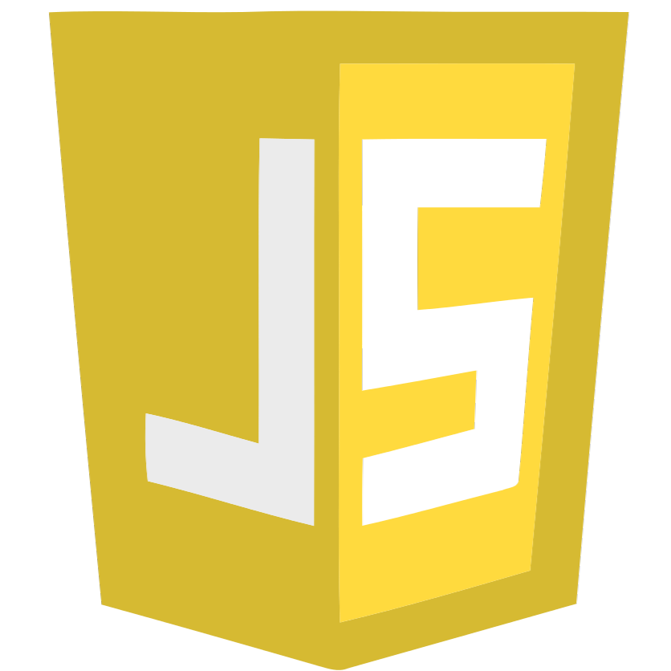

Dev & Social
Sobre mim
私について
Olá, Seja bem-vindo(a)!
Meu nome é Lucas Cicarello Girata. Desenvolvedor, estudante e muito interessado em tecnologia, em especial Front-End, mas também linguagens e tecnologia Back-End e de Dados.
Atualmente, curso o 4° Período do curso de Bacharelado em Sistemas de Informação pela PUCPR (Pontifícia Universidade Católica do Paraná), onde tenho contato com as tecnologias mais utilizadas atualmente, além de conceitos importantes da computação.
Formações
資格・学歴
Bacharelado em Sistemas de Informação
PUCPR · Cursando (4º Período)
2025 à 2028
Técnico em Desenvolvimento de Sistemas
SENAI · Formado
2023 à 2024
Formação Ensino Médio
Sesi Internacional · Formado
2022 à 2024
Linguagens e Tecnologias
プログラミング言語・技術
Tecnologias que tenho conhecimento e venho aplicando, praticando e aprimorando a cada novo projeto.
Front-End
React.js
HTML5

CSS3

JavaScript
Back-End e Banco de Dados

Python

Java

MySQL
Projetos
制作物
Conheça alguns dos meus projetos em destaque e descubra meu trabalho!
Professor's PokéDesk
Catálogo interativo da Pokédex das três primeiras regiões do mundo Pokémon, com busca e filtragem em tempo real, páginas de perfil com possibilidade de montar sua própria equipe utilizando drag-and-drop e persistência dos dados entre sessões.
HTML5
CSS3
JavaScript
Professor's PokéDesk
Catálogo interativo da Pokédex das três primeiras regiões do mundo Pokémon, com busca e filtragem em tempo real, páginas de perfil com possibilidade de montar sua própria equipe utilizando drag-and-drop e persistência dos dados entre sessões.
HTML5
CSS3
JavaScript
Professor's PokéDesk
Catálogo interativo da Pokédex das três primeiras regiões do mundo Pokémon, com busca e filtragem em tempo real, páginas de perfil com possibilidade de montar sua própria equipe utilizando drag-and-drop e persistência dos dados entre sessões.
HTML5
CSS3
JavaScript
Professor's PokéDesk
Catálogo interativo da Pokédex das três primeiras regiões do mundo Pokémon, com busca e filtragem em tempo real, páginas de perfil com possibilidade de montar sua própria equipe utilizando drag-and-drop e persistência dos dados entre sessões.
HTML5
CSS3
JavaScript